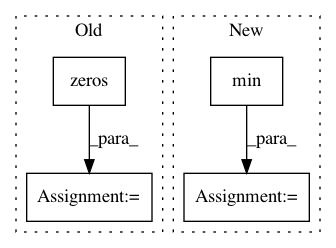

a6236b789b8f4e2e66c8379199f40ecef9afce06,mmdet/core/anchor/anchor_generator.py,AnchorGenerator,valid_flags,#AnchorGenerator#Any#Any#Any#,84
Before Change
feat_h, feat_w = featmap_size
valid_h, valid_w = valid_size
assert valid_h <= feat_h and valid_w <= feat_w
valid_x = torch.zeros(feat_w, dtype=torch.uint8, device=device)
valid_y = torch.zeros(feat_h, dtype=torch.uint8, device=device)
valid_x[:valid_w] = 1
valid_y[:valid_h] = 1
valid_xx, valid_yy = self._meshgrid(valid_x, valid_y)
valid = valid_xx & valid_yy
valid = valid[:,
None].expand(valid.size(0),
self.num_base_anchors).contiguous().view(-1)
After Change
anchor_stride = self.strides[i]
feat_h, feat_w = featmap_sizes[i]
h, w = pad_shape[:2]
valid_feat_h = min(int(np.ceil(h / anchor_stride)), feat_h)
valid_feat_w = min(int(np.ceil(w / anchor_stride)), feat_w)
flags = self.single_level_valid_flags((feat_h, feat_w),
(valid_feat_h, valid_feat_w),
self.num_base_anchors[i],
In pattern: SUPERPATTERN
Frequency: 4
Non-data size: 4
Instances
Project Name: open-mmlab/mmdetection
Commit Name: a6236b789b8f4e2e66c8379199f40ecef9afce06
Time: 2020-04-21
Author: 40779233+ZwwWayne@users.noreply.github.com
File Name: mmdet/core/anchor/anchor_generator.py
Class Name: AnchorGenerator
Method Name: valid_flags
Project Name: scipy/scipy
Commit Name: 9623c7a5851c97e4a7f5a395b2ce9314990e6f4c
Time: 2013-06-20
Author: argriffi@ncsu.edu
File Name: scipy/linalg/_matfuncs_sqrtm.py
Class Name:
Method Name: _sqrtm_triu
Project Name: kermitt2/delft
Commit Name: 151f9e7d141372ce45fc4367b81385eeccc95093
Time: 2018-06-20
Author: patrice.lopez@science-miner.com
File Name: sequenceLabelling/preprocess.py
Class Name:
Method Name: to_vector_simple_with_elmo
Project Name: nilmtk/nilmtk
Commit Name: 726a8c4103d28ea6ffb5910bde0621659fcfd9eb
Time: 2015-01-08
Author: jack-list@xlk.org.uk
File Name: nilmtk/stats/histogram.py
Class Name:
Method Name: histogram_from_generator